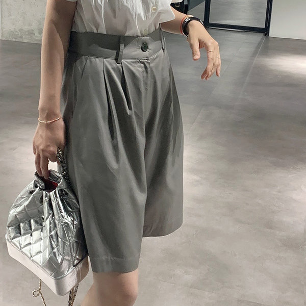
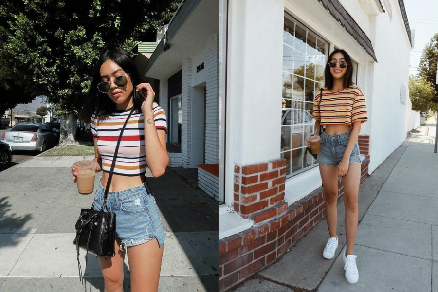
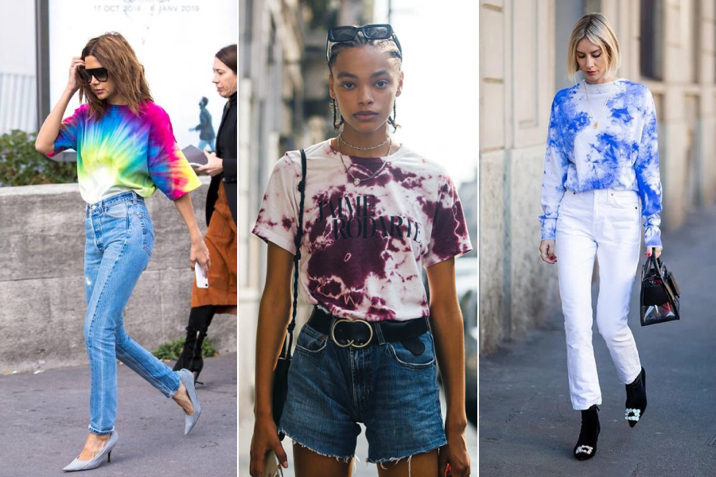

Summer

여름의 첫 번째 코디 아이템은 무릎 위까지 오는 기장의 반바지를 칭하는 '버뮤다팬츠'이다.
캐주얼한 룩부터 포멀한 코디까지 다양한 룩에 과감하게 반바지를 더한 느낌이 특징이다.

두 번째, 포인트 아이템으로 활용하기 좋은 '크롭탑'이다.
그중에서도 스트라이프 패턴이 들어간 크롭탑은 캐주얼한 느낌을 연출할 수 있다.

세 번째, 옷에 그림을 직접 그린 듯한 느낌을 연상시키는 '타이다이'이다.
핸드메이드 느낌으로 더욱 유니크하고 스타일리시한 매력을 어필할 수 있다.